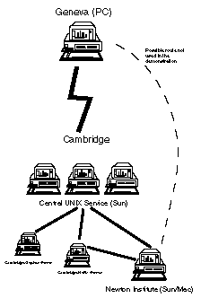

I feel that there are two aims to our computer working group. The first is to provide a forum where we can present our work and discuss it. The second is that we can come up with ideas which will enhance the value and use of computers within our subject. I feel that the second is the more important, as the majority of Egyptologists are not au fait with what is going on in the computer world. I would like to think that I can try and make Egyptologists realise what is possible, and then they might be inspired to come up with innovative practical applications.
Last year in Cambridge I enquired as to how many participants in Informatique et Egyptologie were using or had access to email. There was also announced the intention of setting up an Egyptological bulletin board. Since that time I have myself started to use international networks for more than just email, and this whole area of connectivity is the subject of my communication. My undisguised aim is to encourage readers to start using some of these ideas in practice.
Communication seems to be the essence of computing in the 1990s. The 1980s were the decade of the personal computer, and it was only in the second half of that decade that connecting personal computers with international networks was seriously considered.
At the moment, how do we communicate? We write letters, we use the telephone, we may use electronic mail a little. Data may be exchanged using floppy discs, as we shall do for publishing the proceedings of this meeting, but our ultimate exchange of information is in printed publications. I am not going to suggest for one minute that we do away with any of this; rather I want to add new ideas to our armoury.
I begin with a description of the backbone to our electronic communication, the Internet. I must stress that the connections I am talking about are "publicly" available--they do not require private networks which are only open to one company or organisation.
The Internet is a general description of the world-wide system of networks to which access is possible publicly. This network links academic institutions, commercial organisations, and even the military, although it is not of course used for sensitive security and commercial information. It is additionally possible to gain access to it for those who do not belong to connected institutions, since most public bulletin boards and information systems, such as Compuserve, have access to the Internet.
At present there are more than one million computers connected to the Internet. These range from individual PCs through workstations to mainframe computers, and thus the number of people who are able to access the Internet must run into many millions.
Much does depend on the policy of the computing facility of the institution to which a scholar belongs. It is, however, a common misconception that the facilities I describe are available only to those in the sciences. This may have been true once, in the same way that use of computers was similarly restricted many years ago, but where would Informatique et Egyptologie be if that were still the case?
However, I will concede that policies vary from one institution to the other, and that the authorities at some sites may be positively unhelpful; different institutions have different ways of charging for services. In Cambridge, any member of the university can have a computer account which allows them access to the Internet and all that it offers. A user is in general restricted only by the facilities available on his or her machine. Nonetheless, the reality is that most of us are attached to a university or research institute of some sort, and almost every such institution is connected to the Internet; therefore Internet access in some form must be possible. If we spend much of our time away from the computer facilities of that institution, then it is still possible to obtain telephone access into it.
There are two ways of obtaining access to these facilities. The `traditional' method is to use an account on a multi-user system, whether it be a mainframe or workstation, on which the software resides to carry out all the tasks. These days, virtually all such computers are connected to the Internet. Users must log into these machines to obtain these facilities, but then also have available other software packages, such as compilers, typesetters, and so on, as well as access to the considerable computing power such machines possess. The other, and much newer, method is to have an Internet connection directly to the PC in your office. Programs can be run on the PC which connect into a mail store, the news or Gopher servers, or permit access to ftp archives. All this is achieved without the need to log into a local `mainframe'; all the software runs on the PC.[2]
The second of these will only work if the connection to the Internet is direct, which means that the PC must be running TCP/IP (Transmission Control Protocol/Internet Protocol; the underlying communication protocol of the Internet). This is typically an ethernet or Token Ring connection. If one's PC speaks to the world using, for example, the X25 protocol, then there is no choice but to connect to the Internet through an intermediate multi-user computer.
The diagram in figure 1 shows the route by which the Geneva-Cambridge connection at the meeting was made.

Figure 1 Diagram of the Geneva-Cambridge connections used in the original demonstrations
The remote login facility on most multi-user systems makes possible several of the topics in this paper. My demonstrations during the Geneva meeting were conducted on a computer in Cambridge, to which I connected remotely. Therefore one can always reach one's files so long as one has Internet access. In addition it is also possible that another computer will have a facility that your local one does not. Connection is easy, as long as permission is obtained to work on that machine. This is a way of accessing databases too. If the output of the remote software is graphical, then if the X-Window system is available, it can appear on the local terminal as if the software were running there.
Traditional email is the easiest to comprehend. The writer decides to send a message, he addresses it, gives it a title, writes the message, and then sends it. Depending on the messaging program, it is possible to organise incoming and outgoing messages into folders.
Email is stored in a mailbox until the user wishes to collect it, thus continuing the analogy with conventional mail. So long as access can be obtained to the site at which the mailbox resides, it can be read from anywhere in the world, which is of course impossible with regular mail.
This is a stage further from email. A message header, containing the address of the recipient is prefaced to a previously prepared file, which is then sent. It arrives as a long message. It is usually sensible to compress files before sending, to save transmission time and charges.
Any type of file can be sent, although there are some intermediate stages if the file is binary or in a proprietary format. One of the great strengths of the Internet is that it has a very simple standard for transmission of email and files, which is basically the lower part of the ASCII character set, which is something which can be handled by all machines today. Such files can be called `text files'. However, most modern software packages also use characters from the upper part of the ASCII set, or the new standards which allow for over 32,000 characters; image files consist of binary or hexadecimal data. For transmission over the Internet, such files are encoded into a form of ASCII text which can be decoded by the recipient. No data is lost in this process: e.g. a Macintosh file will arrive with its icon intact. There are several different encoders around; the Macintosh world tends to use Binhex, the UNIX world uuencode/uudecode, and there are several in the DOS world e.g. Boo/Deboo.
Another approach to the discussion of a subject is to compile and operate a mailing list. Obviously, one can keep a note of those who are interested in a subject and keep mailing them messages, comments, whatever from other interested persons. But this is a real chore for the system administrator, and it is now possible for this process to be automated. A program resides on the host machine for the mailing list. A circular is sent out (manually) to those who are known to be interested, and those who wish to subscribe to the mailing list send a very specific message to the mailing list program saying they wish to subscribe. Communications to the mailing list are sent as email messages to a specific address, and all these messages are then automatically relayed to all subscribers. Replies are directed either to the mailing list or to the individual person.
This is not unlike the way in which Usenet (see below) operates, but it has the advantage that knowledge of the list is not automatically available to everyone on the Internet, and thus there is less chance of peripheral people becoming involved. A major disadvantage is that the messages take the form of ordinary email, which can mean that mailboxes fill up quickly and conventional messages can be easily overlooked.
Mailing lists of this type have existed in subjects such as Classics for some time. By pure coincidence, in the week before the Geneva meeting, the Oriental Institute in Chicago announced that it has set up a list for those interested in the Ancient Near East. This list began by soliciting comments on how it should be organised, but after its first month, submissions settled down to a mixture of useful pieces of information, requests for information, and news.[3]
I described above how to send files by email. This is the best way to send the occasional file to different people, and if it is not wished to make files consistently available. However, if you possess information, such as an archive, which you are prepared to have others access in a passive manner, then ftp may be the best solution. ftp stands for File Transfer Protocol; lower-case (ftp not FTP) is usual.
ftp can be used in two ways. With a user identifier on the remote machine, it is possible to connect directly to that specific account and transfer files to and from privately. I have recently been using this method of getting Postscript files from Cambridge to the typesetting service in Oxford.
The other method is called anonymous ftp. In this way, the manager of the remote machine sets up a special ftp directory to which anyone in the world can connect anonymously. Once a connection is established, files can be transferred back and forth very quickly.
Anonymous ftp really comes into its own in interrogating archives. Most major computer companies have ftp connect points from which can be obtained updates of software (not chargeable of course), or public domain programs. For example, I recently downloaded a German version of System 7.0.1 from Apple Computer (electronic address ftp.apple.com). Various universities also maintain archives of public domain and shareware programs for different computers. For example, in the UK, there is a large archive for all types of computer at the address src.doc.ic.ac.uk in London. Programs, data, and text files stored in these archives are compressed and encoded to make transfer over the Internet easier.
It is thus also possible to set up your own archive for people to access. At the Heidelberg conference on Theban tombs in June 1993, there was a discussion on how to handle the vast amounts of material generated by an excavation. It is for practical reasons (usually cost) only possible to include a cross-section of the material in the traditional publication. Putting other material on a CD-ROM is one possibility for the rest. An alternative (or additional) possibility is to make an ftp archive of it. If this material is accompanied by an index, others can see what is available and then obtain the sections that interest them.
Obviously copyright problems have to be addressed here, but they are not insurmountable, and in my opinion, are not really all that different to copyright on traditional publications.[4] How does one make the material available to the different computer systems? If we initially talk about printing the material once it is retrieved, then the use of Postscript is a good starting point. As I think we all now know, Postscript is a device-independent way of printing a document.
What if we want to view the material on screen? One way is to have different versions for e.g. DOS/Windows, Macintosh, or in plain ASCII. As the versions of major software packages on different computer systems become more interchangeable, this is getting easier. Word and Pagemaker, for example, are available for both Windows and Macintosh; an even better case is Framemaker, which runs under Windows, Macintosh, and many different variations of UNIX, and all files are interchangeable.
Other possibilities are on the horizon. A number of new products claim to be able to convert documents into forms which can be read by other systems without the need for having the software and fonts on that other system.[5] This concept is in effect a stage further than Postscript: Postscript enables documents to be printed across different systems, but these new programs offer in addition on-screen viewing and even appending of notes.
A further step on is that this is a way to make publications available without the print medium. I am a great enthusiast of books, but there are some things which are going to become very difficult to publish with rising costs. These or things which cannot find a publisher could surely be made available on ftp sites, so that people could obtain and use them cheaply. It would then be up to the ftp user whether to print them out.
Helen Strudwick has set up an ftp facility in Cambridge with the co-operation of the Isaac Newton Institute for Mathematical Sciences. This can be accessed at the electronic address newton.newton.ac.uk, and the material will be found in the directory pub/ancient. Submissions from scholars interested in the Ancient Near East are most welcome, subject to ensuring that material stays within copyright and a few other guidelines. The Oriental Institute in Chicago is also setting up an ftp facility there which will contain their information and reference materials in addition to materials made available by scholars.
A popular alternative to mailing lists has been the bulletin board, an electronic equivalent of the boards we see on the walls of our institutions. Users can post announcements, requests, etc. for others to see and reply. There are very many private bulletin boards and also public ones. In Cambridge last year, it was mentioned that one might be started by the CCER.
Most bulletin boards are designed for access via modem; thus to contact one at the CCER in Utrecht, an international telephone call would have to be made to the Netherlands before communication could begin. The obvious disadvantage of this is that it is expensive on phone calls. Some of the commercial bulletin boards have circumvented this problem by having local access points so that the telephone calls are only local ones, but it is unlikely that any international bulletin board in our subject would ever command enough users for local access points to be viable.
But with the Internet, we have immediate access to any bulletin boards which are connected to it. And on the Internet we find the largest of its kind in the world, the Usenet News service.
This works as follows. People interested in specific areas set up "News groups" in which matters relevant to their subject can be discussed. There are guidelines for creating these. Users can browse (depending on software) all the available groups, select those to which they do and do not wish to subscribe, and then read the news items (usually termed `postings') and reply either with another posting, or by using private email.
There are presently over 2,000 news groups on Usenet. They include all sorts of subjects: e.g. computing, social, political and religious issues, and recreational activities such as sports, cooking, music, literature etc. The computing ones are particularly useful if you have a problem, since if you post a request for information, there are hundreds of well-informed people who might be able to help.
What happens technically is that the user runs a `client' software program on his or her own machine which communicates with a local machine which is a News Server. This machine communicates with other News Servers on the Internet, and they send each other news postings which have been generated since their last communication. Thus when an article is posted, it will appear on your local news machine fairly quickly, but it can take a while for it to go round the world.
It would thus be possible for us to create an Egyptology news group, to which those of us who have Usenet access can reach for little or no charge. The major problem I see with this is that access to it might have to be controlled, since Usenet groups are accessible to anyone in the world, and therefore there is a good chance that there will be a fair amount of traffic on it from non-Egyptologists. It is not unfair to describe Usenet as a form of co-operative anarchy.
There are ways round this, however. The best way is for the news group to be moderated i.e. items sent to the news group are filtered out by being sent to a co-ordinator who would then filter out anything irrelevant. The only difficulty with this might be that the moderator could be accused on censorship.
The newest information handling program is called Gopher, developed in 1991 at the University of Minnesota. This also works on the client-server principle, whereby users (`clients') connect to a local Gopher `server'. Each Gopher server contains a menu of items, in which local managers place new items of interest, files of interest, and so on. For each item on a menu, a request is sent by the client to the server, which it turn sends back the requested information or takes a particular action. One of the menu options is to connect to other Gopher servers around the world. On asking to see a particular server, the local server sends a request to the remote server, which then sends back the requested directory of information. Another option is to use a Gopher utility to search though other Gopher servers to find things of particular interest. When an article of interest is found, it can either be saved to the local machine, or emailed elsewhere.
In this way, it is something of a cross between Usenet and ftp. It does not have the anarchic feel of Usenet, in that the display of information is under the control of the Gopher manager (it also has an advantage over mail lists). Therefore it is not suited as a forum for discussion, but more for digests of discussion. However, almost anything can be programmed by the manager into the menu displays, such as access to ftp sites, or direct connections to Usenet news groups. Its displays of files and items which can be retrieved is more controlled and easier to use than ftp, and users do not need to know the detailed addresses of the places where the files are held.
Current opinion seems to be that Gopher exemplifies the way in which information management is moving.[6] A Gopher server under the control of certain institutions can make access to data very easy. As an example, a use for Gopher might be for the Annual Egyptological Bibliography. New books could be notified to the server as soon as they are entered into the computer--this could be one of the most useful ways of harnessing the powers of computers for our research.[7]
This paper has attempted to show that better means of communication do exist than those used at present. In particular, there are ways of sharing ideas and thoughts, and, perhaps most useful of all, ways of making our material easily available to any colleague who has access to a computer on the Internet. We can perhaps start making tentative moves towards removing our reliance on slow and expensive ways of traditional publication, but only of course where the material suits the methods of dissemination I have been describing.
NOTES:
[1] My thanks are due to the following for facilitating the demonstration at the meeting: Jean-Luc Chappaz, for putting me in contact with the technicians in the Centre Pédagogique, and to the technicians themselves for providing information which made the connection with Cambridge possible.
[2] I must stress that I use PC in this paper to mean `Personal Computer', and not particularly to the IBM and IBM compatible world.
[3] Information as to how to subscribe to this list can be obtained by emailing Charles Jones at charles_jones@oi.uchicago.edu, or obtaining the document Chicago.ANElist.txt by anonymous ftp (see below) from newton.newton.ac.uk in the directory pub/ancient.
[4] Readers are referred to Dirk van der Plas' comments at the Geneva meeting, which appear elsewhere in these proceedings.
[5] For example, Adobe Acrobat, No Hands Software Common Ground, and Farallon Replica. I have seen none of these personally as of September 1993.
[6] There are other such information systems such as WWW and WAIS, although Gopher is probably the most widespread at present, as the client software can be run on most PCs as well as multi-user systems. Gopher is the only one of which I have personal experience.
[7] Subsequent discussion with Willem Hovestreydt of the AEB has indicated that they are not fully convinced that the search facilities of Gopher are sufficiently consistent at different sites to make access easy. They have, however, no objections in principle to the dissemination of their information by electronic means.